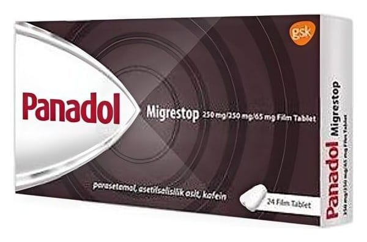

Panadol Migrestop 250 mg /250 mg /65 mg Film Tablet

Ne için kullanılır
KT · Bölüm 1• PANADOL
MİGRESTOP etkin madde olarak parasetamol, asetilsalisilik asit ve kafein kombinasyonunu içeren film kaplı tablet formunda bir ilaçtır. • PANADOL MİGRESTOP, “diğer analjezikler ve antipiretikler” denilen bir ilaç grubuna dahil olan ağrı kesici ve ateş düşürücü bir ilaçtır. Parasetamol hem ağrı kesici hem ateş düşürücü etki sağlarken, asetilsalisilik asit ağrı kesici, ateş düşürücü ve iltihap giderici etki sağlar. Kafein ise hafif bir uyarıcıdır ve asetilsalisilik asit ve parasetamolün etkisini arttırır. • PANADOL MİGRESTOP film kaplı tabletler, beyaz, oblong şekilli, bir yüzünde “E” baskılı tabletler görünümündedir. PANADOL
MİGRESTOP, 24 film kaplı tablet içeren
PVC/PCTFE(Aklar)/PVC-Aluminyum folyoda, orijinal ambalajlarda kullanıma sunulmaktadır. • PANADOL
MİGRESTOP, 18 yaş ve üstü yetişkinlerde baş ağrısı, diş ağrısı, akut migren atakları, sinir ağrısı (nevralji), kas-iskelet sistem ağrıları, adet ağrısı (dismenore) gibi hafif ve orta şiddetli ağrılar ve soğuk algınlığı gibi ağrının eşlik ettiği durumlarda endikedir.